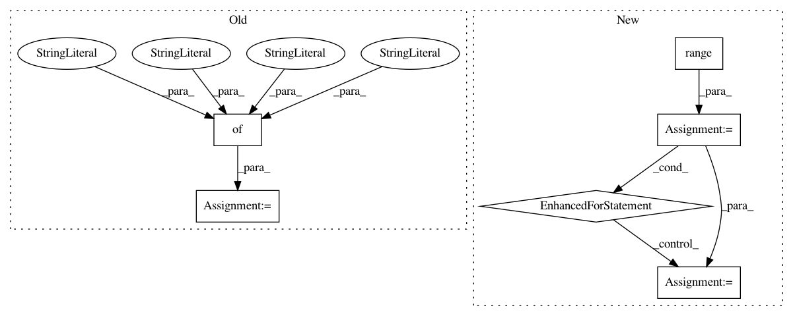

058c79c9653af78184deb94aa3853f8a37eec32a,pyinterpret/core/global_interpretation/partial_dependence.py,PartialDependence,partial_dependence,#PartialDependence#Any#Any#Any#Any#Any#Any#Any#Any#Any#Any#,10
Before Change
means[row_id] = mean_prediction
sds[row_id] = std_prediction
pdp = {
"features": feature_ids,
"means": means,
"sds": sds,
"vals": grid_expanded
}
return pdp
def partial_dependency_sklearn(self):
pass
After Change
pdp[feature_id] = new_row[feature_idx]
if predict_fn.n_classes:
for i in range(predict_fn.n_classes):
pdp["mean_{}".format(i)] = mean_prediction[i]
pdp["sd_{}".format(i)] = std_prediction[i]
else:
pdp["mean"] = mean_prediction
pdp["sd"] = std_prediction
pdps.append(pdp)
In pattern: SUPERPATTERN
Frequency: 3
Non-data size: 6
Instances
Project Name: datascienceinc/Skater
Commit Name: 058c79c9653af78184deb94aa3853f8a37eec32a
Time: 2017-03-02
Author: aikramer2@gmail.com
File Name: pyinterpret/core/global_interpretation/partial_dependence.py
Class Name: PartialDependence
Method Name: partial_dependence
Project Name: flow-project/flow
Commit Name: 67f6d47d9e61f28d455319c868c38fbc11e73366
Time: 2018-02-22
Author: eugenevinitsky@wirelessprvnat-172-16-134-167.near.illinois.edu
File Name: flow/scenarios/bridge_toll/gen.py
Class Name: BBTollGenerator
Method Name: specify_connections
Project Name: flow-project/flow
Commit Name: 4956dc485f78ef2b7c5f4a13f8abb7a24cfbb1bb
Time: 2018-09-16
Author: vinitsky.eugene@gmail.com
File Name: flow/scenarios/highway/gen.py
Class Name: HighwayGenerator
Method Name: specify_nodes